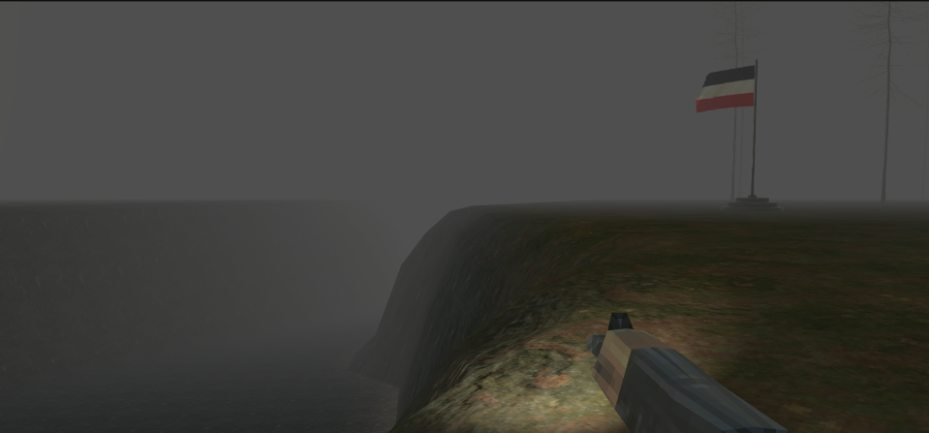
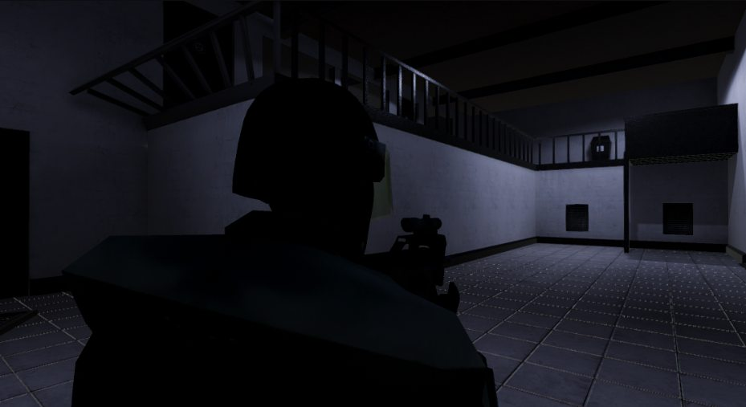
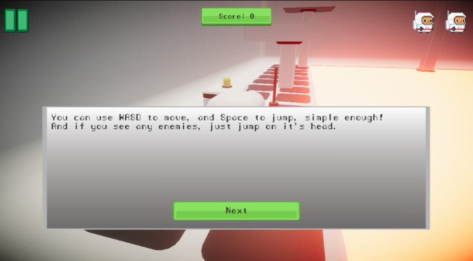
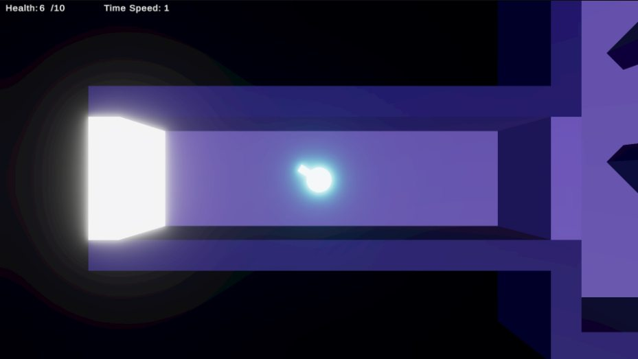
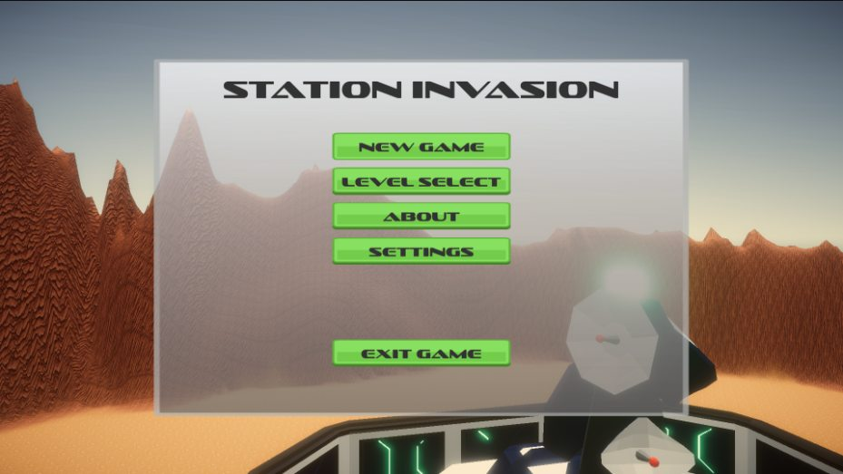

No man's land
A first-person, PS1-style WW1 game.
View gamePick a game to see screenshots, details, and download links.

A first-person, PS1-style WW1 game.
View game
Play as SCP 173 in a small SCP facility map. Now it's your turn to take revenge on the humans!
View game
A short 3D platformer where you play as an astronaut and collect 3 crystals!
View game
Choose an ability and see how it changes your next run. A small top-down shooter made for Brackeys Game Jam 2023.1 in 2 days!
View game
In a world where bosses rule, how can a simple cube save the day? Maybe he has some secret powers we aren't aware of.
View game
A 3D shooter made for a Coursera assignment, with new levels and an options menu.
View game